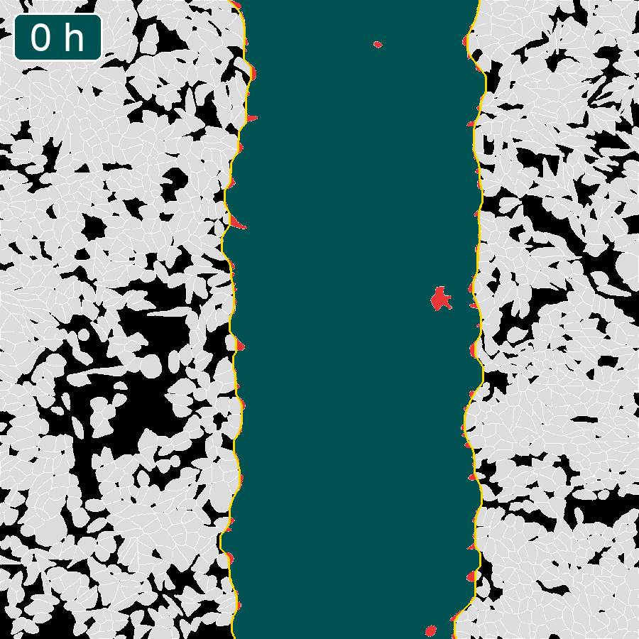

Animation 04
Visualisierung der Wundbesiedlung
Das Video zeigt die Wundbesiedlung über einen Zeitraum von 48 Stunden. Zum Zeitpunkt t = 0 wird die Wundkante über eine gelbe Linie definiert. Sobald die Zellen in den zellfreien Wundbereich migrieren, werden diese rot markiert.

Dein Browser unterstützt die Videowiedergabe leider nicht.